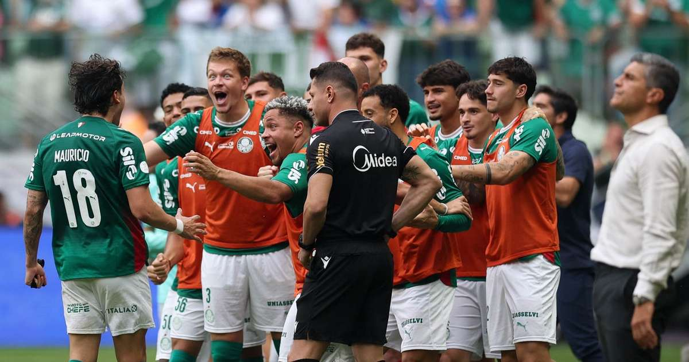

Libertadores · Manchete
Palmeiras e Estudiantes decidem a América em Montevidéu
A final da Libertadores está marcada para 28 de novembro, no Estádio Centenário. O Verdão chegou lá depois de passar pelo Fluminense nos pênaltis, enquanto os argentinos despacharam o Flamengo, que ainda tentou reverter a eliminação na Conmebol, sem sucesso.
Os dois clubes voltam a se encontrar numa decisão continental 58 anos depois do duelo de 1968.
4 nov 2026